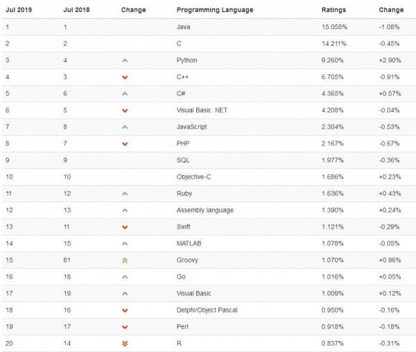
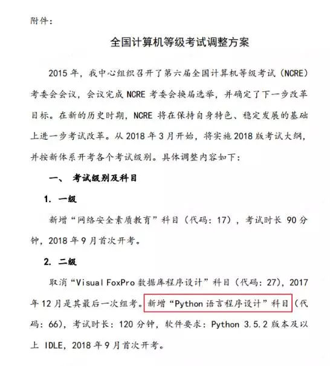
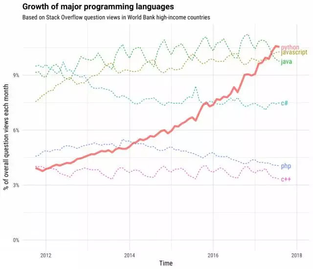
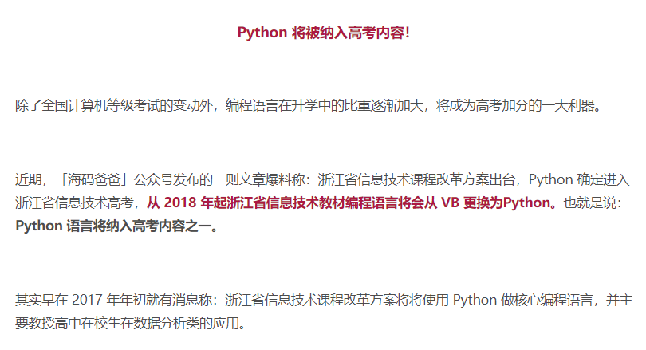
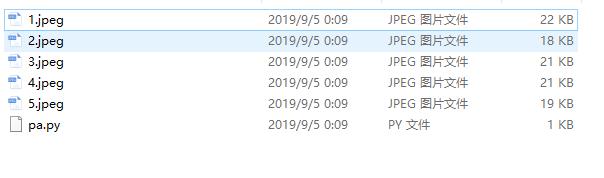
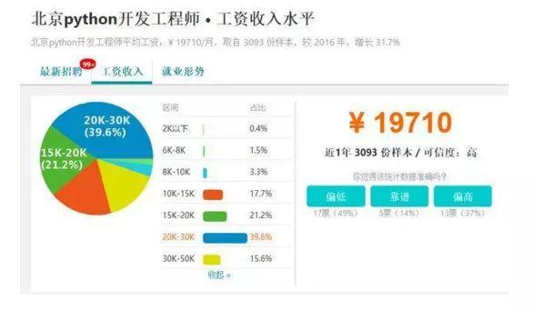
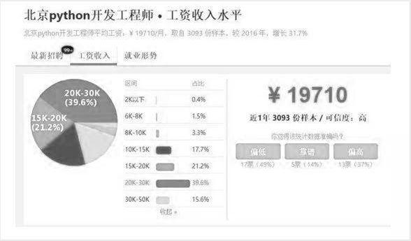

相信有好多朋友们都是第一次了解python吧，可能大家也听过或接触过这个编程语言。那么到底什么是python呢？它在什么机缘巧合下诞生的呢？又为什么在短短十几年时间内就流行开来呢？就请大家带着疑问，让我们来探索python的奥秘吧!
一：python发展史与优缺点
1.发展史
python，英文翻译为巨蟒，爬虫。是荷兰计算机学家吉多·范罗苏姆(著名的G叔)，在1989年圣诞节期间，为了打发圣诞节的无趣，开发的一个脚本解释程序，结合了Unix shell和C的习惯。。而python这个名字就是取自英国20世纪70年代首播的电视喜剧《蒙提.派森的飞行马戏团》（Monty Python's Flying Circus）。
python第一个公开发行版发行于1991年，还不太成熟。在1994 1月，Python 1.0 增加了 lambda, map, filter 和 reduce。在2000年10月，python2.0发布，稳定版本是Python 2.7，加入了内存回收机制，构成了现在Python语言框架的基础。2004年, 目前最流行的python的WEB框架Django 诞生。自从2004年以后，python的使用率呈线性增长。Python 3于2008年12月3日发布，不完全兼容Python 2。好多种语法进行了大规模翻新。现在python已经更新到python3.7版本。
在众多的编程语言中，为什么python会不断地上升，成为现今世界最流行的语言之一呢。让我们先来看几个图来体会一下python的重要性：



2.优缺点
哈哈，有没有体会到python的重要性，下面就向大家介绍为什么python这么受人追捧：
(1)Python语言简洁、易读、可扩展性。
(2)Python语言开源，每个人都能为python做贡献。
(3)Python有一些很高级，开源的科学计算软件包，比如Anaconda。
(4)Python库很多，不仅仅有很简单的库，还有很多高级库，比如著名的计算机视觉库Opencv、三维可视化库VTK、医学图像处理库ITK都与python有关。
(5)Python是个"胶水语言"，可以和其他众多语言相配合使用。
(6)Python的缩进风格对于一些"代码洁癖"的人来说很友好。
(7)Python方向众多，而且每一个方向都有与其有关的实用高级库。
(8)Python可移植性很好，在多个平台，如Linux、Windows、FreeBSD、Macintosh、Solaris、OS/2、Amiga、AROS、AS/400、BeOS、OS/390、z/OS、Palm OS、QNX、VMS、Psion、Acom RISC OS、VxWorks、PlayStation、Sharp Zaurus、Windows CE甚至还有PocketPC、Symbian以及Google基于linux开发的Android平台都能够很好地运行。
(9)Python一定程度上可以当作伪代码，也是利用过了其简洁的风格。
(10)在计算机内部，Python解释器把源代码转换成称为字节码的中间形式，然后再把它翻译成计算机使用的机器语言并运行。就让用户不再需要担心如何编译程序，如何确保连接转载正确的库等等。
(11)Python的面向对象机制功能强大。
但是python作为编程语言也是有缺点的，如下：
(1)运行速度一直是python的诟病，虽然现在有了多进程与多线程技术。
(2)Python的开源性让Python语言不能加密，这也造成python语言有时候不太安全，使得众多黑客技术人员都在研究python，python也成为一种有关网络信息安全的语言。
(3)Python的库比较多，这也造成了解决一个问题的可供选择的范围大，不同人可能会利用不同的python技术解决同一个问题。
综上，python是一种优点众多的语言，而python在很多领域都有了很大的突破，在系统编程，图形处理，数学建模计算，文本处理，数据库编程，网络编程，Web编程，多媒体应用，黑客编程，自动化运维，网络爬虫，数据分析，机器学习，人工智能方面应用广泛。
二：python程序员与工程师薪资
只有不断磨练自己的技术，并融入实践，发现问题，思考问题，突破问题，才能从一个小码农逐渐变为工程师水平。这里主要向大家介绍不同学历毕业后适合的python岗位以及一些比较python岗位的薪资。
1.毕业大学生毕业适合的python岗位
web开发、爬虫、数据分析、自动化运维等(主要偏向应用)。
2.研究生毕业适合的python岗位
web开发、数据分析、科学运算、机器学习，人工智能初级及中级(偏向数据之类)。
3.研究上以上适合的python岗位
web开发，更高级的数据分析，机器学习，人工智能等。
4.一些python岗位的薪资
我们先用一小段简单代码抓取一些网上python薪资图片，查看下python的就业岗位薪资：
代码如下：
1 import requests
2 from bs4 import BeautifulSoup
3
4 def get_message(url):
5 m = 1
6 r = requests.get(url)
7 soup = BeautifulSoup(r.text,'lxml')
8 for i in soup.select('.image-block span'):
9 this_img = requests.get(str(i.attrs['dataurl']))
10 with open('{name}.jpeg'.format(name = m),'wb') as f:
11 f.write(this_img.content)
12 m = m + 1
13
14 def main():
15 get_message('https://cloud.tencent.com/developer/news/327697')
16
17 if __name__ == '__main__':
18 main()
一共用了18行不到吧(其实为了美观，有些空白行不占内存)。
结果如下：


额，好像有些模糊，我们再用python处理下图像灰度化：
1 from PIL import Image
2 import numpy as np
3 img = Image.open("E://python学习//1.jpeg")
4 img_array = np.array(img)
5 arr1 = img_array[:]
6 print(arr1.shape)
7 for x in range(1,arr1.shape[0]):
8 for y in range(1,arr1.shape[1]):
9 a = img_array[x,y][1]
10 b = img_array[x,y][2]
11 c = img_array[x,y][1]
12 arr1[x,y] =(a,a,a)
13 image_arr = Image.fromarray(arr1)
14 image_arr.show()
暂时比较清晰了，下面是其他岗位信息：